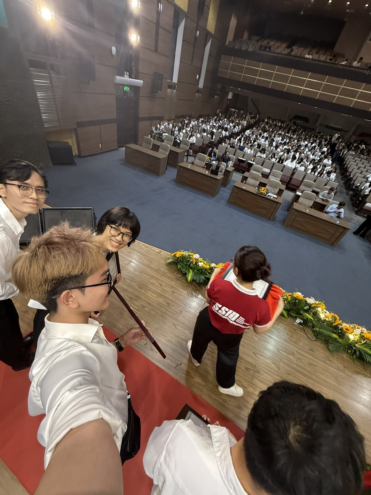

PERSONAL PORTFOLIO · 2026
NGUYỄN THANH
NHẬT MINH
Sinh viên ngành Quản trị tại Đại học Kinh tế Thành phố Hồ Chí Minh.
Mình yêu thích ngành F&B, bắt đầu từ một lý do rất giản dị: mình yêu những trải nghiệm ăn uống và ước mơ có đủ khả năng để thưởng thức những món mình thích, ở nhiều vùng đất khác nhau. Nhưng càng tìm hiểu, mình càng bị cuốn hút bởi một ngành đầy nhịp điệu: nơi con người, trải nghiệm khách hàng và hiệu quả vận hành cùng chuyển động mỗi ngày.
Mình theo đuổi các công việc về điều hành, quản trị, chiến lược và kiểm định. Với mình, Quản trị không hề chung chung; đó là nền tảng để hiểu một tổ chức vận hành ra sao, nhìn một vấn đề từ nhiều phía và biến ý tưởng thành kết quả. Mình có tham vọng, nhưng sẵn sàng bắt đầu từ những vị trí nhỏ nhất để thật sự hiểu công việc, con người và áp lực ở từng chặng đường.
Dòng nước không cần vội, nhưng luôn biết đường để chảy về phía trước.



A SMALL JOURNEY
Hành trình của mình
Chạm vào từng cột mốc để mở ra một lát cắt trong hành trình của mình.
A NOTE OF GRATITUDE
Cảm ơn vì đã dừng lại ở đây.
Cảm ơn anh chị đã dành thời gian đọc đến đây. Việc anh chị ghé thăm trang web này có thể là một cơ hội nhỏ để mình được kể về hành trình, năng lực và những điều mình đang hướng tới. Mình trân trọng cơ hội đó, và hy vọng một ngày nào đó có thể đồng hành, học hỏi và tạo ra giá trị cùng anh chị. Chúc anh chị luôn vui vẻ, bình an và làm được những điều mình thật sự mong muốn.